获取udid有两种方式
1：手机连接电脑，打开iTunes软件，点击序列号字母处
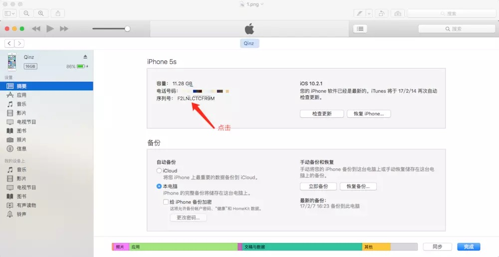2：显示UDID
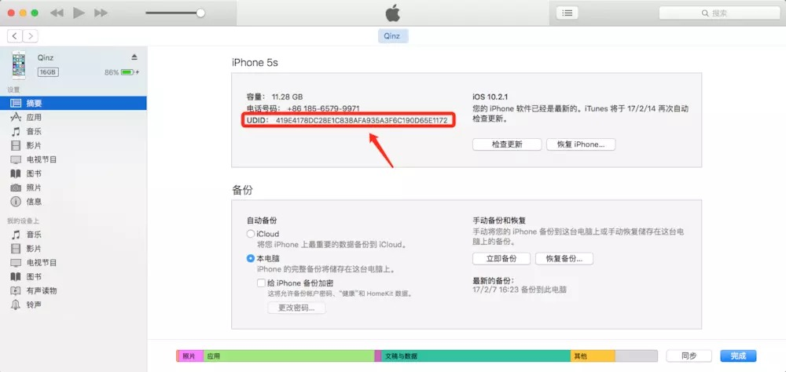3：点击鼠标右键拷贝即可
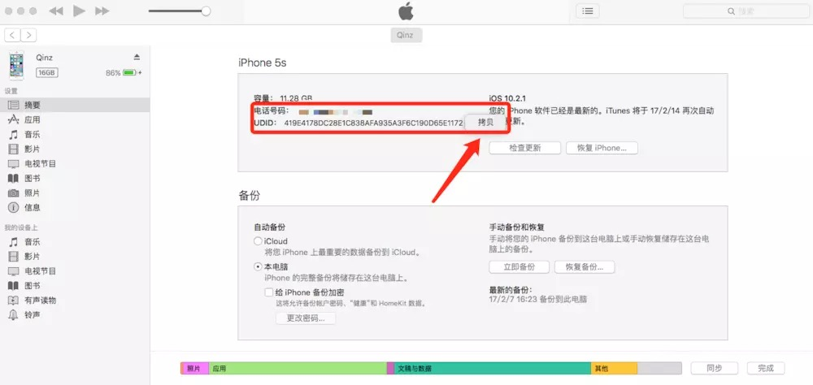2.打开该网址会出现下面的界面
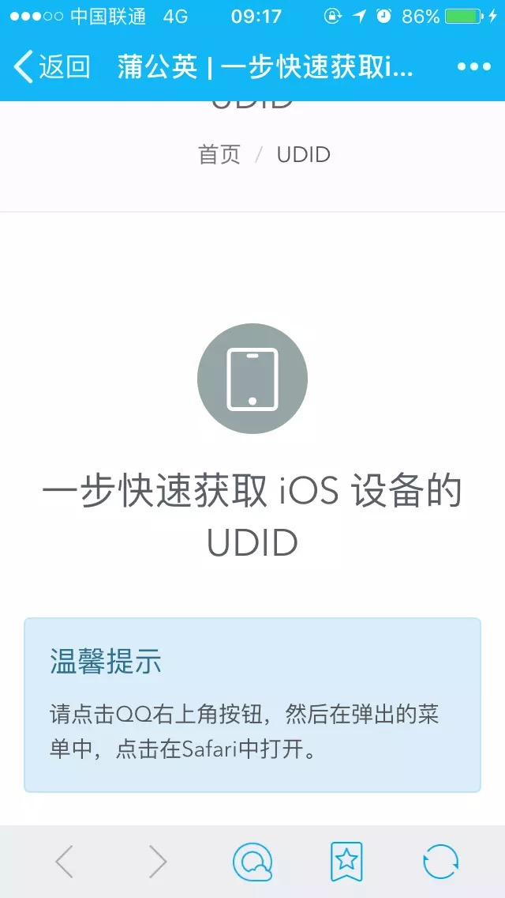3.点击右上角的三个点的按钮，点击用Safari打开
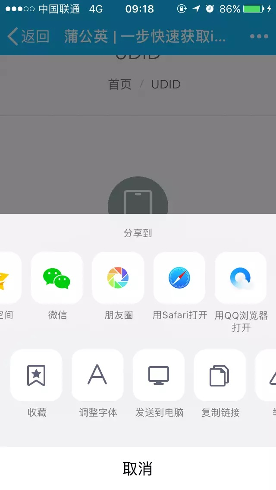4.点击获取UDID绿色的按钮
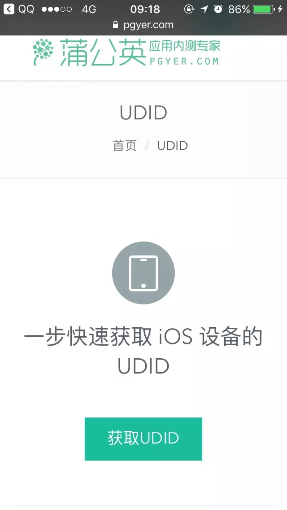5.会出现需要安装配置文件已获取信任，点击右上角的安装
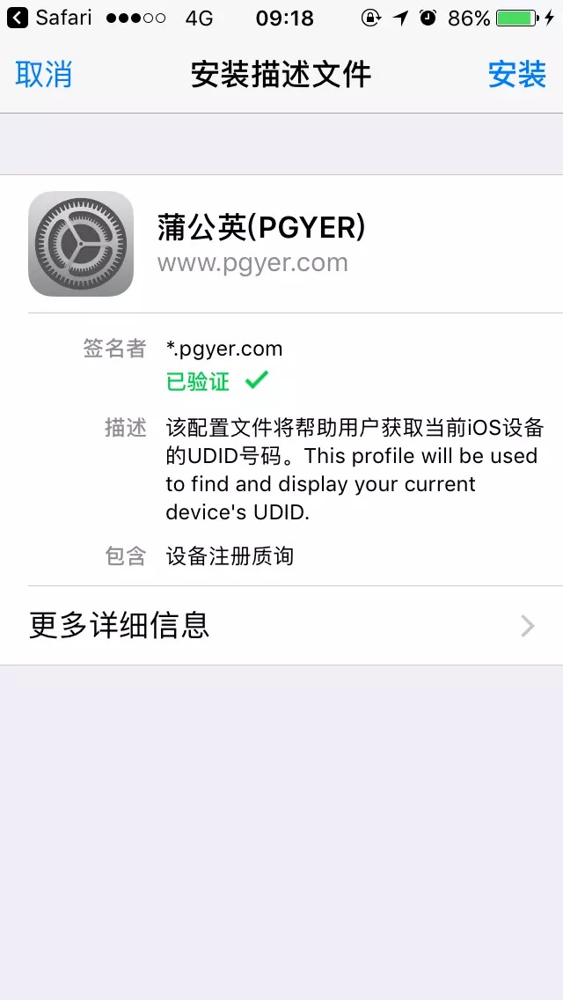6.输入手机的锁屏密码
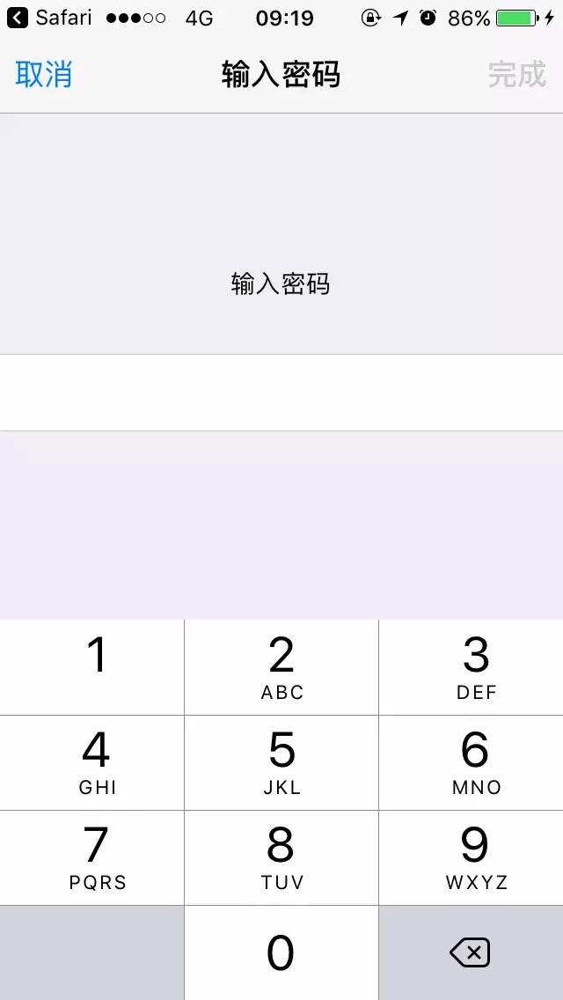6.点击安装！
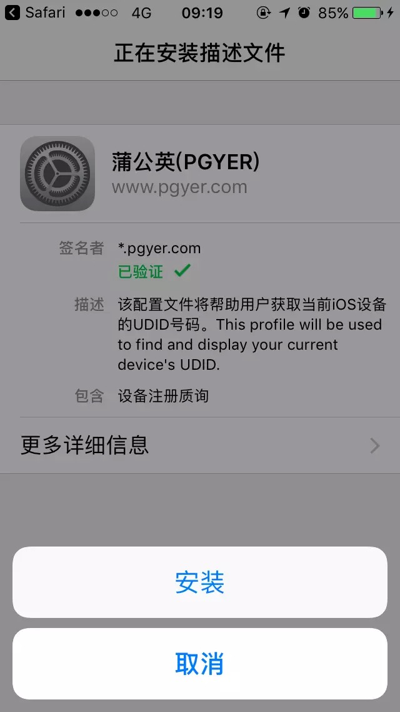7.接下来UDID就显示出来了
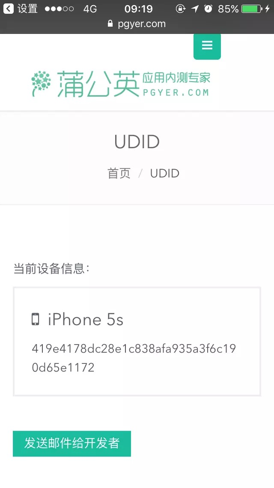8.长按点击拷贝，不要直接发截图哦~！
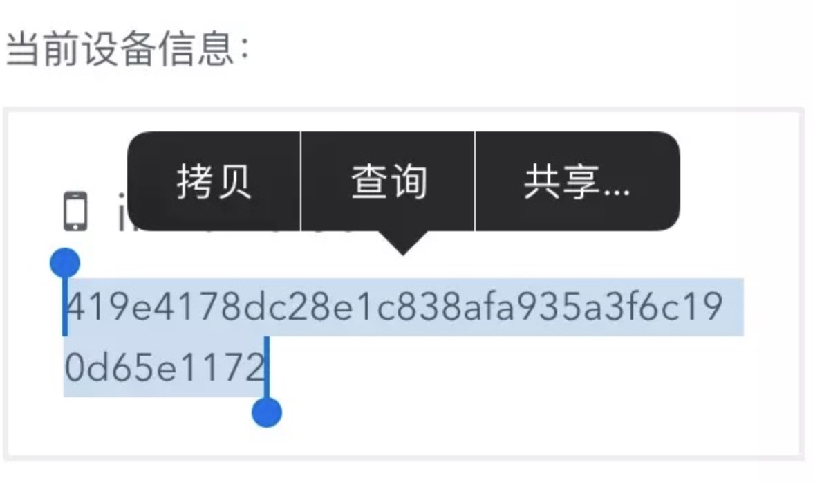